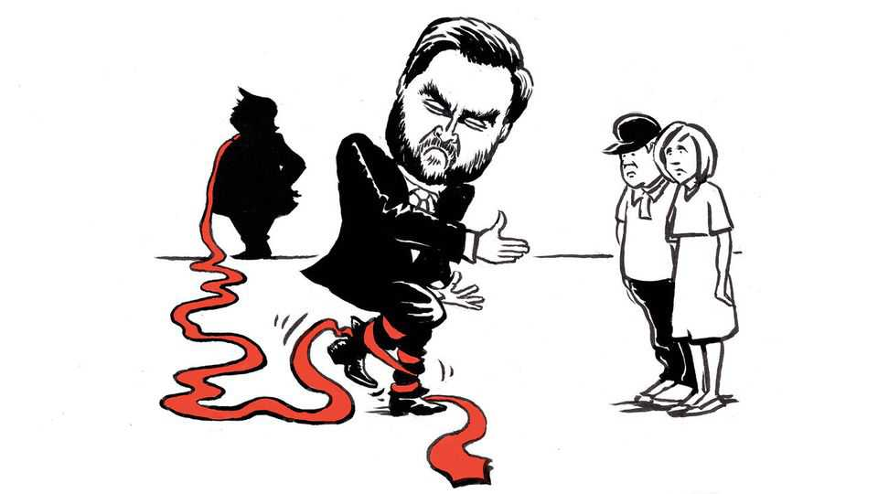

Republicans are in for a brutal presidential contest
And Democrats suddenly have a unifying agenda

Nov 5th 2026
If future HISTORIANS want to pinpoint the start of the campaign for the presidency in 2028, they might consider the moment late on election night of 2026 when Chris Christie, the once and probably future Republican presidential candidate, brought the hammer down on the vice-president, J.D. Vance.
As stunning results came in from Ohio, Mr Christie, serving as an analyst on ABC, zeroed in on the most vile act of the midterms: the choice by that state’s Republican candidate for governor, Vivek Ramaswamy, to broadcast an advertisement in which the mother of his opponent, Amy Acton, called her a liar. Dr Acton had not seen her mother, Donna Arthur, in nearly 50 years, not since Ms Arthur fled with her husband after he was charged with raping his stepdaughter, Dr Acton, then 12. When the ad drew criticism from some Republicans, Mr Vance said he was disgusted by their “whining” and praised Mr Ramaswamy’s “audacity”.
Mr Vance will be remembered for that embrace “more than anything else” from this campaign, Mr Christie predicted, as he helped make that so by recalling it on ABC. “He stood behind that ad!” Mr Christie expostulated. “A man who wrote a book on Catholicism stood behind that ad. It’s a disgrace.” Mr Christie later added that the Trump era was over and that, for voters, “character matters”. That was perhaps a rosy inference, one of many being made—including that gerrymandering can backfire and the richest man in the world cannot buy an election outcome—yet, like the others, one borne out by facts. Dr Acton thumped her opponent. She is the first woman elected to serve as governor of Ohio, and the first Democrat in 16 years.
This was, in all, a bad election outcome for Mr Vance. Despite repeated trips to his home state of Ohio, he also saw his old Senate seat there go to a Democrat, Sherrod Brown. Moreover, as the vice-president’s dabbling with profanity and innuendo on the campaign trail had already shown, the cruel, vulgar style of MAGA politics never really worked for anyone but Donald Trump, and even for him the act has worn thin. Worse, still, Americans have also repudiated the substance of Trumpism.
Mr Vance has laboured to position himself as Mr Trump’s heir. But he can expect brutal competition if he does, in the end, choose to run. He wants to ascribe Republicans’ defeat solely to the war on Iran, from which he has gingerly distanced himself. But, protean though he is, Republican challengers will not let him duck responsibility for the full Trump agenda. Some of those historians may instead date the start of the presidential campaign to November 2nd, when Ron DeSantis, Florida’s Republican governor, accused unnamed members of his party of “gaslighting” Americans by pretending the war had not raised costs, as well as “corporatism” and failures on artificial intelligence and big tech.
Republicans are paying the bill for their strong leader and his idiosyncratic agenda. In the campaign to come, they must battle over what their party stands for, if not trade wars on friend and foe, shooting wars in the Middle East, state capitalism, public debt, self-enrichment in office and unchecked executive power. By contrast, Democrats, who for two years have lacked a national leader or a coherent politics besides opposing Mr Trump, emerge from the midterms with a blueprint for unifying the party and winning nationally. In his eccentric, Republican-defeating way, Mr Trump even did the Democrats a favour on election day by appearing to take an issue that bitterly divides them off the table. He said he would stop $4bn in aid to Israel by the end of the year.
Success in the South and Midwest brings the Democrats a ballasting geographical diversity. To hold their gains, let alone build on them, they will have to appeal to the socially moderate voters—Latino, black and white—who made the victories possible. Candidates such as James Talarico and Josh Turek, senators-elect from Texas and Iowa, tapped into anger against both parties, talking up decency, bipartisanship and even, at times, Mr Trump.
They also embraced an economic populism that is the through-line for successful Democratic candidates from North Carolina to Michigan to Texas. One of the canniest and most ambitious Democrats, Representative Alexandria Ocasio-Cortez, released a five-page memo on election day describing her campaigning for candidates from the centre to its left. The memo did not mention climate change or any social issues but touted her focus on “economic populism, confronting concentrated wealth and power, and revitalising American democracy”. Words such as “justice” and “equity” made no appearance.
That Democratic leaders are aware of the danger of tying up Congress in futile impeachment proceedings may not prevent them from being dragged down that path. But this was also a bad midterm outcome for the party’s radical legislators, since its big House majority will deprive them of leverage. The priorities of the party’s precious new office-holders are to begin lowering prices by ending the war in Iran and to restore congressional authority over tariffs. Beyond that are such equally popular measures as banning stock-trading by members of Congress and reversing tax cuts for millionaires, a move Mr Trump has, in the past, suggested he could support. A veto would mean, for Democrats, a compelling campaign issue.
In fact, opportunities beckon for Mr Trump, too. He may yet have the chance to memorialise himself not just by “regrassing” the White House lawn, an achievement he celebrated the day before the election, but by, say, accomplishing landmark legislation to reform immigration. That would deprive Mr Vance and the Republican Party of a cherished campaign issue, illegal immigration. But Mr Trump would not care about that. ■